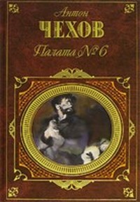

Палата № 6
Полное многостраничное HTML-издание повести (19 глав) на 5 страницах, с закладками, заметками и тремя темами чтения. Работает автономно, без интернета.
«Если вы не боитесь ожечься о крапиву, то пойдемте по узкой тропинке, ведущей к флигелю, и посмотрим, что делается внутри.»
А. П. Чехов. «Палата № 6», глава I

Ваши закладки и заметки
Оглавление (5 страниц)
Текст: электронное издание на основе общедоступной версии UntoldArchive.com. Чехов умер в 1904 году, и произведение находится в общественном достоянии.